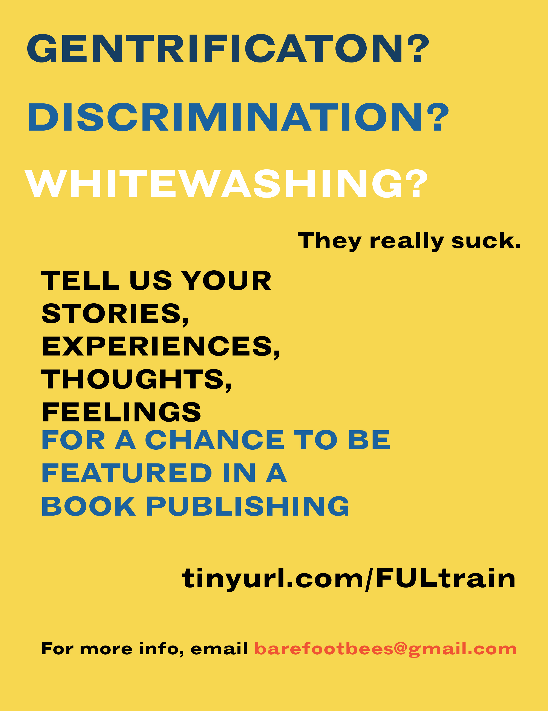

This is a book that Daniel Chu and I are curating on gentrification along the L Train located in Brooklyn, New York.
I have always been passionate and outspoken with my stance on gentrification and erasure of culture. To see this happing live before me on an everyday basis made me angry, upset, and a deep sense of injustice. My friend, Daniel, and I would be on the L train and watch as people with no knowledge of the origins of Williamsberg and/or the L train would rave about this new "fusion food" or this "awesome Chinese Korean sushi Bar with poke burritos" and it would frustrate us. We decided to act on this, and curate a book with personal accounts, stories, feelings, and experiences on gentrification.
As one native New Yorker (Queens is the best borough), and one Urban Design student, we decided to approach this in a participatory manner, putting up flyers and posting a link to a submission on social media to reach those not only in our inner circle, but those outside of it who have been impacted by the L Train.

This is a working project as of 3/2019, updates to follow!